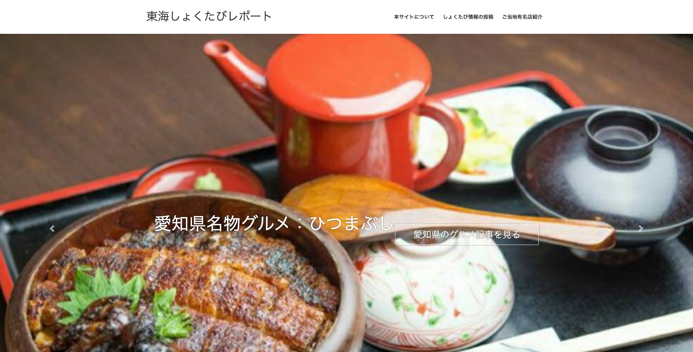
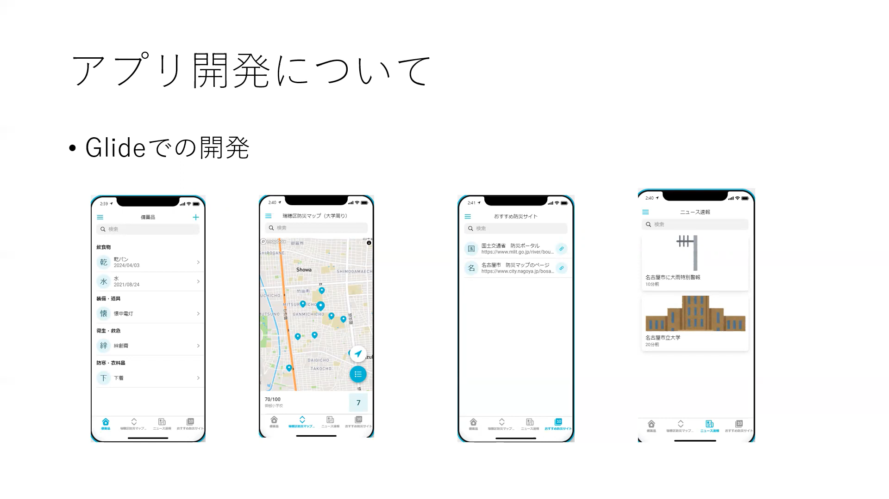

| 夏のゼミ合宿についてまとめます |
|
学部3年次のゼミ合宿はオンラインで行い、データビジュアライゼーションをテーマにWordPressでのサイト作成を行いました。  愛知県の観光魅力度の低さのデータを示し、東海地方の観光を食べ物の視点から活性化させるために愛知県のグルメ紹介サイトを作りました。 学部4年次のゼミ合宿もオンラインで行い、スマートシティの実地調査をテーマに我々の班はアプリ作成を行いました。  我々はスマートシティたかまつの防災に着目し、防災アプリの作成よりスマートシティに実現に近づこうと考えました。 高松市の方々にヒアリングも行い充実したゼミ合宿でした。 最初はノーコードアプリでの作成をしていました。その時はGlideを用いてアプリ作成を行っていました。 しかしながらノーコードでは限界を感じました。 なので我々は途中からPythonにシフトチェンジし、Flaskを用いたwebアプリを作成しました。 |